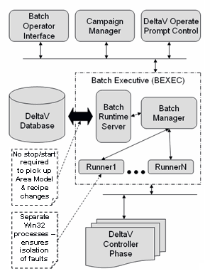

Batch Executive architecture
The Batch Executive architecture splits batch control into multiple processes: a single Batch Manager process, a Batch Runtime Server, and individual batch runner applications. The Batch Manager is responsible for coordinating and monitoring the lifetime of all batch runner processes and also takes care of sending information from the runners to clients that require run-time data. This management responsibility includes launching the processes, collecting and distributing their runtime information, sending and responding to requests to and from the runners, and making sure the processes exit when they are complete. There is one instance of a batch runner for every active batch. Each runner is responsible for taking the batch through all of its states and communicates to the Batch Manager for equipment arbitration and any other inter-runner or client-based communications. These batch runners all run independently of one another, so if one has a problem or stops working, it does not affect any of the other runners.
When a client application makes a request to create a batch, the Batch Manager launches a new batch runner process. The runner loads all the expected information about the area model and recipe and enters the "Ready" state, which tells the operator that it can be started. If for any reason the runner encounters an error while loading, it will enter the "Load Failed" state instead of the "Ready" state. When a batch Remove request is sent from a client, the Batch Manager marks the runner as being removed and forwards the request to the runner, which begins the shutdown process, including disconnecting and unloading any controller phases it may have loaded, disconnecting from the Batch Manager, and exiting.
If the Batch Manager detects that a runner application has exited without first having been sent a Remove request, the Batch Manager will place the batch representing that runner into the "Lost" state. If the Batch Manager stops functioning, the individual batches keep running, but will appear as "Lost" in the Batch List of the Batch Operator Interface. Lost batches can be removed or can be restarted.
The architecture of the Batch Executive enables a download of equipment model changes without having to restart the Batch Executive. Below is a graphical representation of the Batch Client-Server Architecture.

Each Batch Executive node has one Batch Manager service, one DeltaV Batch Runtime Server, and any number of batch runner services running at a given time. The DeltaV Batch Runtime Server provides various DeltaV runtime interfacing and download services to all batch applications. For example, the Batch Runtime Server provides information such as security, equipment hierarchy, recipe information, and other DeltaV system information. The Batch Runtime Server allows for partial downloads of equipment model changes, and coordination between Batch Executive nodes regarding equipment arbitration.